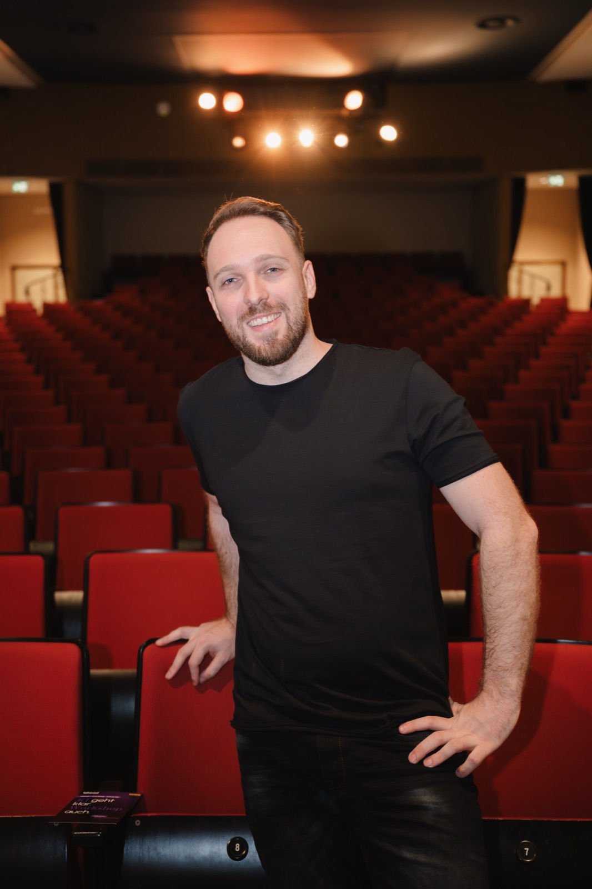
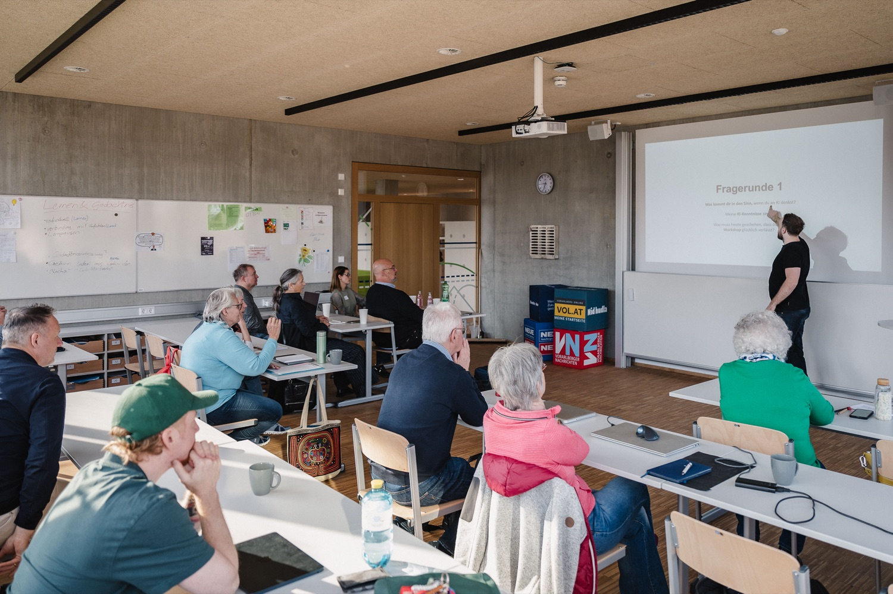
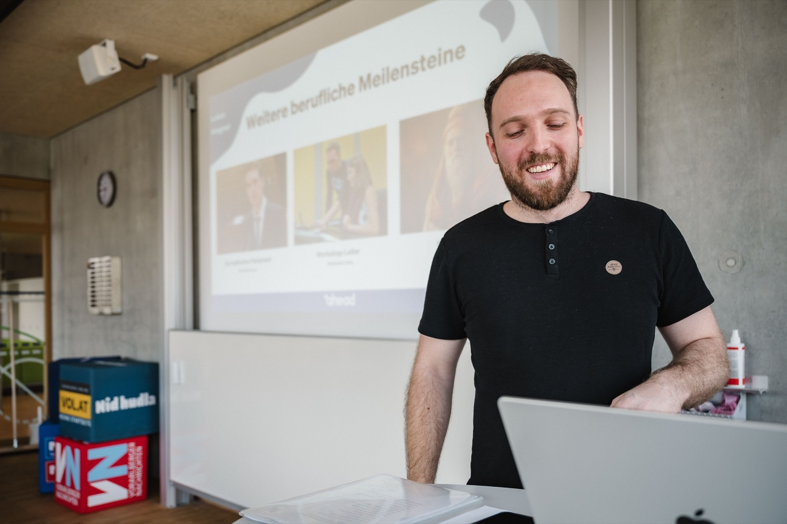
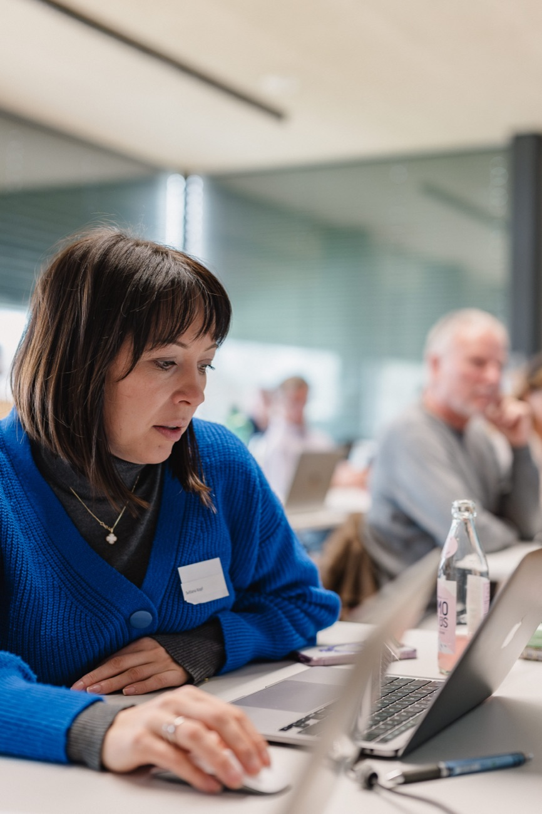
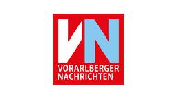
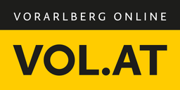
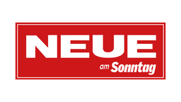
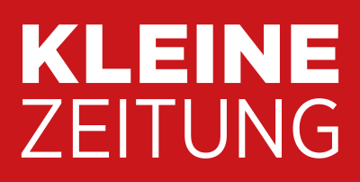

01
Verstehen
Was ist relevant, und was nur Hype? KI wird eingeordnet, in klarer Sprache statt Fachjargon.
Was bleibt Eine gemeinsame Sprache für KI.
Lukas Wagner · KI-Keynote-Speaker
Die Zukunft ist kein weiterer Bildschirm.
Live-Keynotes, die künstliche Intelligenz verständlich, überraschend und gemeinsam erlebbar machen. Für Unternehmen, Konferenzen, Städte und Regionen.

Die Haltung
Mehr Werkzeuge.
Mehr Inhalte.
Mehr Antworten.
Aber immer weniger Raum, um gemeinsam zu verstehen.

Genau deshalb bringt Lukas Wagner künstliche Intelligenz aus dem Bildschirm in den Raum.
Die Keynote
Was ist relevant, und was nur Hype? KI wird eingeordnet, in klarer Sprache statt Fachjargon.
Was bleibt Eine gemeinsame Sprache für KI.
Live-Demos mit Fragen und Input aus dem Publikum. Was passiert, sieht der Saal in Echtzeit.
Was bleibt Eine realistische Vorstellung von Möglichkeiten und Grenzen.

Aus dem gemeinsamen Moment entstehen konkrete nächste Schritte, passend zur Organisation.
Was bleibt Ideen, die am nächsten Arbeitstag ausprobiert werden können.

Formate
Für Teams, KMU und Organisationen.
KI-Werkzeuge am eigenen Arbeitsalltag getestet, begleitet und eingeordnet.
Workshop anfragen →Für Städte, Regionen und Partner.
Ein kuratiertes Live-Event mit lokalen Partnern aus Medien, Wirtschaft und Bildung.
Regionalformat anfragen →Warum Lukas
Jahre auf Bühnen, auf denen Aufmerksamkeit unmittelbar gewonnen werden muss.
Komplexe Gedanken so verdichten, dass Menschen sie verstehen und erinnern.
Nicht nur Vorträge halten, sondern ganze Erlebnisse und Veranstaltungsreihen entwickeln.
Slam-Poet · 100+ Kulturveranstaltungen · Förderpreis 2017 · TEDxSalzburg Speaker-Coach · Gründer von ahead x
KI ist sein Thema. Aufmerksamkeit ist sein Handwerk.
Der Beweis
Mit ahead x baut Lukas Wagner die Räume, über die er auf der Bühne spricht.
Ein Abendeine Stadtacht Städteeine Plattform
Zahlen: ahead x, Stand April 2026
Medien- & Netzwerkpartner von ahead x




Alle im Raum können nicht anders, als an seinen Lippen zu hängen.
Seine Fähigkeit, komplexe KI-Konzepte verständlich und anschaulich zu vermitteln, macht ihn zu einem herausragenden Sprecher.
Lukas übersetzt die Komplexität des Themas meisterhaft, ohne dabei an Tiefe zu verlieren.
Anfrage
Datum. Ort. Zielgruppe. Anlass. Mehr braucht es für den ersten Schritt nicht.
Direkt: kontakt@lukaswagner.at · auch für Presse & Interviews
Keine 87 Folien. Versprochen.
FAQ
Für Konferenzen, Firmenevents, Stadt- und Regionalveranstaltungen, Verbände und Bildungseinrichtungen, als Keynote, Workshop oder Moderation rund um künstliche Intelligenz.
Ja. KI wird ohne Fachjargon verständlich gemacht. Tiefe und Inhalt richten sich nach der Zielgruppe.
Kurze E-Mail mit Datum, Ort, Zielgruppe und Anlass, dann folgt eine ehrliche Einschätzung, welches Format passt.